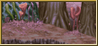
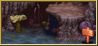
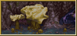
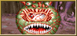
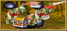
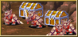
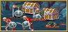
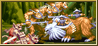

|  좌측 상단 구역 |
 좌측 하단 구역 |
우측 상단 구역 |
 우측 하단 구역 |
 보스 : 비홀더 |
|  숨겨진 방 1 |
 숨겨진 방 2 |
 숨겨진 방 3 |
 숨겨진 방 4 |
숨겨진 방 5 |
| STAGE 5-A Forest of Despair |
| 절망의 숲 |
| (일어판 - 腐海と呼ばれる森 : 부해(썩은 바다)로 불리는 숲) |
특히 기본 무기 이외의 여러 무기를 많이 얻을 수 있다.
xp를 많이 얻고 싶다면 이 스테이지로 오는 것이 좋다.
스테이지 전체 지도 |
왼쪽에서 오른쪽으로 일방통행이 기본인 대부분의 스테이지에 비해 이곳은 工자 모양으로 자유롭게 돌아다닐 수 있는 편이다. 또한 숫자로 표시한 곳에는 각각 숨겨진 방이 있다.
이곳 공략에서는 편의상 네군대로 나눴다. C나 D의 오른쪽 끝까지 가면 보스인 비홀더를 만날 수 있다.
A. 좌측 상단 구역 |
시작하자 마자 바로 아래로 방향키를 향하면 숨겨진 방1로 들어갈 수 있다.
숨겨진 방 1로 가기 ▶
조금 더 전진하면 약간 높은 곳이 나온다. 그냥 갈 수는 없고 방향키를 위쪽으로 하면서 점프(B키)를 하면 올라갈 수 있다. 내려갈 때는 반대로 방향키를 아래쪽으로 하면서 B키를 누르면 된다.
자이언트 비틀 두마리가 빙글빙글 돌고 있는데 이 중 한마리를 제거할 때마다 오른쪽에서 자이언트 비틀 10마리가 나와서 유턴을 하며 지나간 후 다시 왼쪽에서 10마리가 나와서 유턴을 하며 지나간다.
만약 숨겨진 방1로 들어간다거나 자이언트 비틀이 화면에서 안보이는 장소까지 이동한다면 이 자이언트 비틀은 알아서 사라진다.
2번 화살표가 가리키는 바위를 오른쪽으로 밀면 숨겨진 방 2로 들어갈 수 있다.
A버튼을 연타하면 좀 더 빨리 밀 수 있다.
* 팻말에 적혀있는 내용 *
You cannot use magic when the Beholder glares at you.
비홀더가 노려보고 있는 동안은 마법을 쓸 수 없다.
Use magic when he closes his eye!
비홀더가 눈을 감은 동안에 마법을 쓰도록 해라!
사실 이 팻말 내용에 심한 오타가 있다. oloses라니......
3인 이상 플레이시 오른쪽 구석에 한마리가 더 돌고 있다.
또한 마찬가지로 이 녀석을 제거해도 오른쪽/왼쪽에서 각각 10마리씩 유턴을 하고 사라진다.
B. 좌측 하단 구역 |
A에서 B로 내려갈 때, B에서 C로 내려갈 때 마다 오른쪽에서 자이언트 비틀 10마리가 나와서 유턴을 하고 사라진 후 다시 왼쪽에서 10마리가 나와서 유턴을 하고 사라진다.
(3인 이상 플레이시 B에서 C로 내려갈 때 오른쪽 20마리/왼쪽 20마리가 나온다.)
B에서 D로 올라갔을 경우에도 똑같은 패턴에 똑같은 마릿수의 자이언트 비틀이 나오는데 대신 후에 B에서 C로 내려갈 때 나오는 자이언트 비틀은 나오지 않는다.
B로 내려가지 않고 스테이지가 시작하는 지역으로 다시 돌아가면 B로 내려갔을 때 나오는 자이언트 비틀이 그쪽에서 대신 나온다. (3인 이상의 경우엔 오른쪽 20마리/왼쪽 20마리가 나오며 대신 B에서 C로 내려갈 때 총 20마리만 나온다)
3번과 4번 화살표가 가리키는 곳에 대놓고 숨겨진 방이 있다.
숨겨진 방 4로 가기 ▶
숨겨진 방 1에서 나오면 이곳으로 오게 된다.
팻말 옆에는 브레슬렛이 있다. 스테이지가 시작되고 나서 약 22초가 흐르면 사라진다.
(숨겨진 방을 들른 시간은 포함되지 않는다.)
브레슬릿 위치에서 오른쪽으로 더 이동하면 또 자이언트 비틀이 나온다. 오른쪽에서 자이언트 비틀 10마리가 나와서 유턴을 하고 사라진 후 다시 왼쪽에서 10마리가 나와서 유턴을 하고 사라진다.
맨 먼저 숨겨진 방 1을 갔다가 나왔을 경우 오른쪽에서 자이언트 비틀 20마리가 나와서 유턴을 하고 사라진 후 다시 왼쪽에서 20마리가 나와서 유턴을 하고 사라진다.
If you wear the bracelets, your attacking power will be increased.
브레슬릿을 착용한다면 공격의 강도가 증가 할 것이다.
(기본적으로 데미지 1이 증가한다.)
왼쪽으로 가다보면 구울이 튀어 나온다.
만약 숨겨진 방 1과 3을 양쪽 다 갔다 온 후라면 나오지 않는다.
구울이 나온 후로 위쪽 지대로 이동한다면 구울의 위치도 위쪽 지대로 올라가 버린다.
때때로 자이언트 비틀 무리가 한번 더 나오기도 한다.
상자 A
| 랜덤 아이템 | 고정 아이템 | 클래스별 아이템 | |||||||
|
|||||||||
| 드워프가 격파시 | |||||||||
| ??? |
등장하는 적 - 53초 가량이 흐르면 도망간다.
| 1인 | 바닥에서 구울 x2→ 한마리가 제거되면 다시 바닥에서 구울 x2 (총 12마리까지 나온다.) |
| 2인 | 1인 플레이와 똑같다. |
| 3인 | 왼쪽에서 구울 x2 → 전부 제거하면 바닥에서 구울 x3 → 한마리만 남으면 바닥에서 구울 x3 → 한마리만 남으면 오른쪽에서 구울 x2 → 전부 제거하면 바닥에서 구울 x3 → 한마리만 남으면 바닥에서 구울 x3 → 왼쪽에서 구울 x2 → 전부 제거하면 바닥에서 구울 x3 → 한마리만 남으면 바닥에서 구울 x3 |
| 4인 | 4인 플레이와 똑같다. |
스테이지가 시작하고 숨겨진 방을 들르지 않고 22초 이내에 바로 이곳으로 왔다면 오브가 놓여있는 것을 볼 수 있다. 만약 숨겨진 방 1이나 3을 들렀다가 왔다면 오브는 물론이고 팻말도 없다.
숨겨진 방 1이나 3을 들르지 않고 왔다면 이곳에 자이언트 스콜피온 한마리가 돌아다닌다.
왼쪽으로 이동하다가 갑자기 자이언트 스콜피온이 시야에 들어오기 때문에 잘못하면 물릴 가능성이 크다 (상당히 공격적이다). 이녀석을 잡으면 공중에서 7마리가 떨어지며 이 중 2마리만 남으면 또다시 7마리가 떨어진다.
- Tips for the Adventurers
- 모험가들을 위한 조언
Orbs are effective against paralysis and petrifaction.
오브는 마비와 석화를 막는데 효과적이다.
상자 B - 잠겨있으며 낙석/석화/불 트랩의 확률이 각각 1/3의 확률로 발동한다.
| 랜덤 아이템 | 고정 아이템 | 클래스별 아이템 | |||||||
|
|||||||||
| 드워프가 격파시 | |||||||||
C. 우측 상단 지역 |
왼쪽에 쉽게 눈에 띄는 숨겨진(?) 방이 있다.
숨겨진 방 5로 가기 ▶
숨겨진 방 3에서 나왔을 경우 여기로 나온다. 우측에는 슈퍼 힐링 포션이 놓여 있다.
숨겨진 방 1이나 3을 갔다오지 않았다면 이곳에서 적들을 만나게 된다.
그리고 여기서 오른쪽으로 더 가면 보스인 비홀더를 만나게 된다.
| 1인 | 배경에서 트로글로다이트 x3 → 한마리만 남으면 바닥에서 녹색 스켈레톤 x2 → 한마리만 남으면 바닥에서 녹색 스켈레톤 x3 → 두마리만 남으면 오른쪽에서 자이언트 비틀 x10 → 배경에서 트로글로다이트 x3 → 두마리만 남으면 바닥에서 녹색 스켈레톤 x2 → 두마리만 남으면 왼쪽에서 자이언트 비틀 x10 → 바닥에서 녹색 스켈레톤 x3 |
| 2인 | 1인 플레이와 똑같다. |
| 3인 | 배경에서 트로글로다이트 x3 → 한마리만 남으면 바닥에서 녹색 스켈레톤 x2 → 한마리만 남으면 바닥에서 녹색 스켈레톤 x3 → 두마리만 남으면 배경에서 트로글로다이트 x2 → 두마리만 남으면 오른쪽에서 자이언트 비틀 x10 → 배경에서 트로글로다이트 x3 → 두마리만 남으면 바닥에서 녹색 스켈레톤 x2 → 두마리만 남으면 배경에서 트로글로다이트 x2 → 두마리만 남으면 왼쪽에서 자이언트 비틀 x10 → 바닥에서 녹색 스켈레톤 x3 |
| 4인 | 3인 플레이와 똑같다. |
이번에 나오는 자이언트 비틀은 물결무늬를 이루며 느리게 비행한다.
D. 우측 하단 구역 |
만약 숨겨진 방 1이나 3을 들리지 않고 이곳으로 왔다면 셰도우 엘프와 이전 패턴과 같은 자이언트 비틀 한무리가 나온다.
그리고 싸움이 끝나면 더이상 왼쪽으로 갈 수 없다.
여기서 오른쪽으로 더 가면 보스인 비홀더를 만나게 된다.
| 1인 | 오른쪽에서 셰도우 엘프 x2 → 전부 물리치면 왼쪽에서 셰도우 엘프 x2 (이 패턴을 4회 반복) |
| 2인 | 1인 플레이와 똑같다. |
| 3인 | 1인 플레이와 똑같다. |
| 4인 | 1인 플레이와 똑같다. |
|
위쪽으로 가서 만났을 경우 반대편을 보고 있다가 돌아본 후
플래쉬 투 스톤을 한번 시전하고(이때는 무적) 싸움이 시작된다.
아래쪽으로 가서 만났을 경우 마치 석화된 상태처럼 있다가 깨어난다.
위쪽은 초반 패턴이 고정된 것에 비해 이쪽은 패턴이 여러가지다.
비홀더가 주시하고 있는 방향에서는 모든 주문 및 마법도구가 무효화 된다.
(이프리트의 항아리, 프로젝티드 이미지는 예외)
또한 공격 중에 무적시간이 많아서 그냥 싸우려면 꽤나 피곤하다. 쉽게 잡는 법을 알아보자.
위쪽의 경우 초반 패턴이 고정되어 있기 때문에 플레쉬 투 스톤을 쓰는 도중에 위쪽 그림자 치기 위치를 잡아서 공격하면 맞출 수 있으며 성공하면 비홀더는 뒤쪽으로 물러난다.
잡았으면 4히트씩 공격을 넣자. 절대로 5히트 이상 넣지 않도록 한다. 가드 불능인 일종의 반격기를 쓰기 때문이다. 4히트씩 계속 공격하면 공격받고 튕기고를 반복하기 때문에 무난하게 클리어 할 수 있다.
아래쪽은 패턴에 따라 그냥 공격하기 쉽지 않을 수 있고 최악의 경우 시작하자 마자 왼쪽으로 빠져나갈 수 있다. 그래서 먼저 이프리트의 항아리나 진 소환의 반지를 준비 해 둔다.
beholder/b_downstair.gif)
※ 비홀더를 공격하다 보면 비홀더의 눈을 얻을 수 있는데 이것을 가지고 이후의 상점에서 부유신발로 교환 받을 수 있다. 드워프나 엘프가 유용하게 쓸 수 있다.
▶ 클리어 후 레벨이 올라가는 클래스 : 파이터, 매직 유저, 엘프
상점 |
이곳 상점에서 비홀더의 눈을 부유신발로 교환받을 수 있다.
아이템 구입 가격
| 42sp | 32sp | 25sp | 25sp | 130sp |
| ※ 아이템 교환 | → |
'비홀더의 눈'을 가지고 있을 경우 대화를 하면 '부유 신발'로 바꿔준다.
좀 더 자세한 정보는 상점 정보를 보기 바란다. ▶ 상점 정보 보기